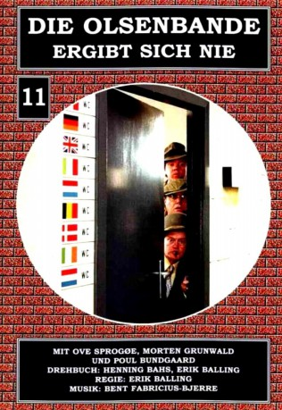

#5409 Olsenbande 11 - Die Olsenbande ergibt sich nie
 
 IMDB-Wertung: 6.8 / 10
IMDB-Wertung: 6.8 / 10  Metascore: 0
Metascore: 0 
Elfter Film mit der Olsenbande aus dem Jahr 1979. Egon war wieder mal im Gefängnis. Dort hat er einen Managementkurs besucht und will sich nun an Aktiengeschäften beteiligen. Seine Geschäftspartner legen ihn rein. Doch Egon und seine Olsenbande geben nicht so leicht auf.
Jahr: 1979
Dauer: 105 Minuten
FSK: 12
Land: Dänemark Studio: Nordisk Films KompagniTonspuren:
Untertitel:
Auflösung: 1080p (1808x1080) Größe: 6154 MB
Genre: Komödie, Krimi
Regisseur: Erik Balling
Drehbuch: Martin Gies
Soundtrack:
Darsteller:
 Morten Grunwald als Benny Frandsen
Morten Grunwald als Benny Frandsen- Ove Sprogøe als Egon Olsen
- Poul Bundgaard als Kjeld Jensen
- Kirsten Walther als Yvonne Jensen
- Axel Strøbye als Kriminalassistent Jensen
- Ole Ernst als Politiassistent Holm
- Bjørn Watt-Boolsen als Bang-Johansen
- Peter Steen als Hallandsen
- Ove Verner Hansen als Bøffen
- Buster Larsen als Sikkerhedsvagt i EF
- Vera Gebuhr als Ministerfruen
- Willy Rathnov als Direktør
- Hanne Løye als Sekretær
- Søren Steen als Sekretær
- Kirsten Norholt als Sekretær
- Elin Reimer als Jordemoderen
- Arthur Jensen als Parkeringsvagt
- Ejner Federspiel als Vagt
- Jes Holtsø als Børge Jensen
- Niels Alsing als Dørvagt i Magasin , uncredited
- Lene Brøndum als Fie , uncredited
- Flemming Danty als (uncredited
- Edward Fleming als Sikkerhedsvagt , uncredited
- John Hahn-Petersen als Politiassistent , uncredited
- Benny Hansen als Truckfører , uncredited
- Claus Heil als Piccolo , uncredited
- Dick Kaysø als Bøffen's assistent , uncredited
- Linda Laursen als (uncredited
- Ernst Meyer als Politiassistent , uncredited
- Per Pallesen als EF-medarbejder , uncredited
- Søren Strømberg als Bang-Johansens chauffør , uncredited
- Solveig Sundborg als Dame ved telefonboks , uncredited
- Poul Thomsen als Politimand , uncredited
Datei: X:\7+mehr(A-Z)\Olsenbande\Olsenbande 11 - Die Olsenbande ergibt sich nie (1979, FSK12, 1808x1080).mkv seit 30.01.2017
Festplatte: HD Collection-7+mehr(A-Z)+Person
 Es gibt insgesamt 17 Filme in der Gruppe '7+mehr(A-Z)\Olsenbande'
Es gibt insgesamt 17 Filme in der Gruppe '7+mehr(A-Z)\Olsenbande'